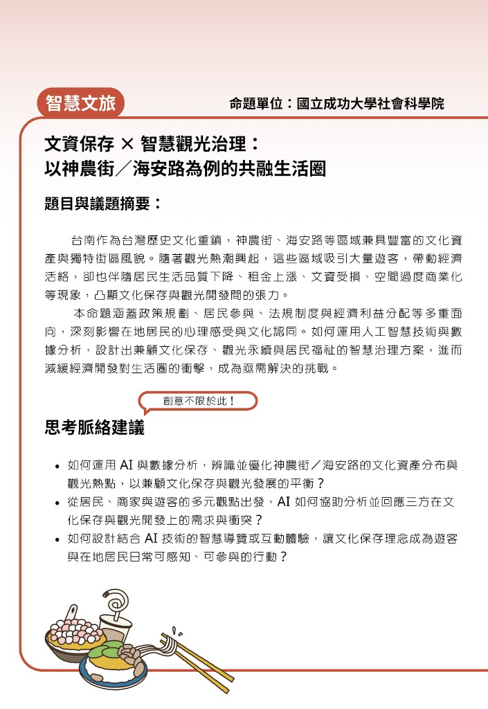
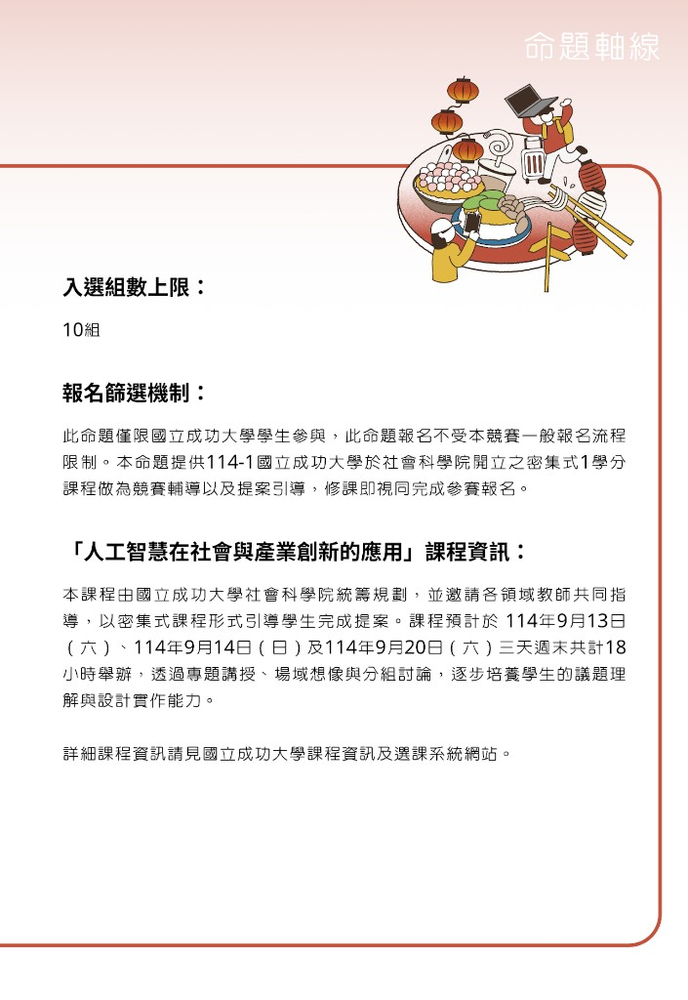
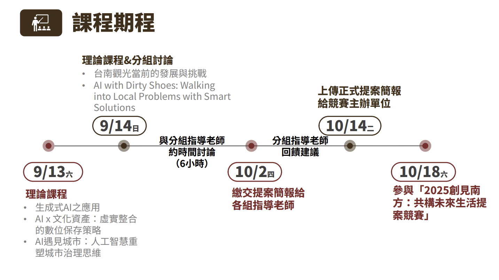
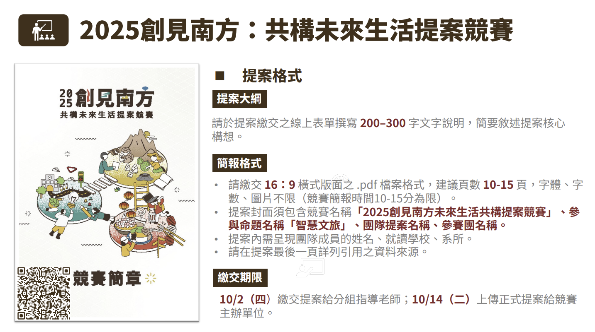

Project 01 · Design Thinking · Proposal
台南ㄏ勝 Tainan Play
Design-Thinking Proposal for Smart Cultural Tourism
This page is about the design-thinking process — not a shipped app. Through empathize → define → ideate → prototype → test, our team shaped a pitch that won 1st place in the Smart Cultural Tourism track at Visioning the South 2025. Tainan Play is the concept that emerged; the journey is the real deliverable.
- 1stSmart Cultural Tourism
- 5Design-thinking phases
- ProposalPitch deck only
- NCKUAI in Society & Industry Innovation
What this page is (and is not)
We did not build an app. The competition graded how well we understood a real place, framed a problem, and proposed a feasible future — through slides and narrative. Everything below follows the design-thinking process that produced that pitch.
Where this started
The course AI Applications in Society and Industry Innovation at NCKU fed into the 2025 Visioning the South proposal competition. Our team entered the Smart Cultural Tourism track — Shennong Street and Hai'an Road in Tainan, where tourism, commerce, and neighborhood life overlap under heavy pressure.
Official brief (命題)
The track brief from NCKU College of Social Sciences: Cultural Heritage Conservation × Smart Tourism Governance — an inclusive living sphere around Shennong Street / Hai'an Road. Tourism brings energy, but also rent pressure, asset wear, and over-commercialization — the tension between preservation and development is the design problem.

Suggested thinking directions
The brief did not prescribe a product. It gave three prompts we used as checkpoints through empathize → ideate:
- How can AI and data help optimize the distribution of cultural assets and tourism hotspots — balancing preservation and development?
- From residents, merchants, and tourists — how can we analyze and respond to conflicting needs across all three?
- How can smart guided tours or interactive experiences make cultural preservation something people can feel and participate in daily?
Track setup & course link
This track was NCKU-only (max 10 teams). Enrolling in the intensive course counted as registration — lectures, field imagination, and group work over three weekends (Sep 13–14 & 20) were our design-thinking scaffold.


Go to the street before opening a slide deck
Design thinking starts with people and place. We walked Shennong and Hai'an, noted peak vs. quiet hours, watched tour groups cluster at the same corners, and listened to how shopkeepers and residents talk about "too many people" vs. "we need visitors to survive."
Stakeholders we kept in the room
- First-time visitors — want stories and atmosphere, often follow the same online checklist.
- Returning visitors & locals — want the street to stay livable, not feel like a backdrop.
- Shopkeepers & craftspeople — need steady, respectful foot traffic; dislike hit-and-run photo stops.
- City / tourism ecosystem — wants cultural depth and sustainable visitation, not one-time hype.
Field insights that stuck
- Crowds spike at a few "must-shoot" spots — the problem is distribution, not lack of interest.
- Many visitors move fast; they miss the slow details that locals value (signs, materials, shop stories).
- Residents don't reject tourism — they reject feeling invisible when their street becomes a set.
- Course framing "AI with muddy shoes" pushed us: any digital layer must earn trust on the ground first.
Turn observations into a problem we can design for
We clustered notes into tensions — speed vs. depth, peaks vs. rhythm, visitor excitement vs. resident dignity — and refused to jump to "build an app" until the problem statement was sharp.
How Might We (HMW)
How might we use a lightweight digital layer to spread visitors across time and routes, reward slower discovery, and make "playing with the city" compatible with everyday street life?
What we explicitly ruled out
- "Another map app" — navigation optimizes shortest path; our problem is behavior and rhythm.
- "AR gimmicks for hype" — flashy tech that ignores resident experience.
- "Gamified crowd races" — leaderboards would worsen peak congestion.
Many ideas, early kills, one direction
We ran structured brainstorms: quest types, reward loops, off-peak prompts, resident co-created stories. The rule was — if an idea couldn't explain why a shopkeeper would nod, it went to the "parking lot."
Ideas we explored
- Time-shifted quests ("visit this lane after 4pm")
- Micro-stories voiced by shop owners (not generic guide text)
- "Notice" missions — texture, motif, old photo match
- Personal play paths by mood (craft / food / quiet alleys)
Ideas we killed early
- Check-in leaderboards at hot spots
- Heavy AR overlays on historic facades
- Coupon-chasing that pulls people to the same shops
- Full English/Chinese AI chatbot as the hero feature
Convergence: 台南ㄏ勝 Tainan Play
The name blends Tainan and play — tourism as an opt-in game, not a queue. The concept: short quests that reward attention, nudge off-peak movement, and center local voices. Still a hypothesis — but one the whole team could defend in one sentence.
Paper prototypes and pitch decks — not code
Our prototype was narrative: user journey storyboards, slide mockups, and a walk-through script so judges could feel "a day in Tainan" without touching a phone. That matched what the competition actually asked for.

Storyboard we pitched (summary)
- Choose a play path — mood-based routes instead of a pin list.
- Micro-quests on the move — human-paced challenges at street level.
- Reflect & collect — lightweight stamps; prompts about surprise, not consumption.
- Share with respect — optional cards that thank off-peak visits, not virality.
Mentor feedback as our "user testing"
Without a product to A/B test, mentor reviews were our iteration loop. Prof. Li-Fang Chou and track mentors pushed us on problem clarity, resident empathy, and whether each slide served the argument.
| Round | What we changed after feedback |
|---|---|
| Oct 2 draft | Cut feature-heavy slides; led with street tension and HMW. |
| Mid-review | Added explicit resident stakeholder voice; softened "tech solution" framing. |
| Oct 14 final deck | Tightened storyboard walk-through; one clear concept name and three design pillars. |
| Oct 18 final | Opened with field insight, closed with feasibility and co-good intent — not a tech stack. |
Rules that survived every iteration
These principles came out of the process — they are how we knew an idea still belonged in the deck.
Process over product
The pitch must show we understand the place first; the app concept is an answer, not the starting point.
Co-good by default
Every mechanic asks: would a resident feel respected, not mined?
Tech stays quiet
Possible tools are mentioned lightly; people, rhythm, and stories carry the narrative.
1st place — and what the process taught me
We won 1st place in Smart Cultural Tourism at the Oct 18, 2025 final. Judges responded to the design-thinking arc: grounded problem, clear HMW, a concept that fits the brief — not a feature laundry list or a fake demo.

For me, this project is the reference case for "design thinking before implementation": empathize on site, define sharply, ideate with kill criteria, prototype in story, test through critique loops — then ask if any technology deserves to exist.
Advisor
Prof. Li-Fang Chou, Department of Psychology, NCKU — helped the team keep problem framing and pitch structure honest throughout AI Applications in Society and Industry Innovation and mentor reviews.